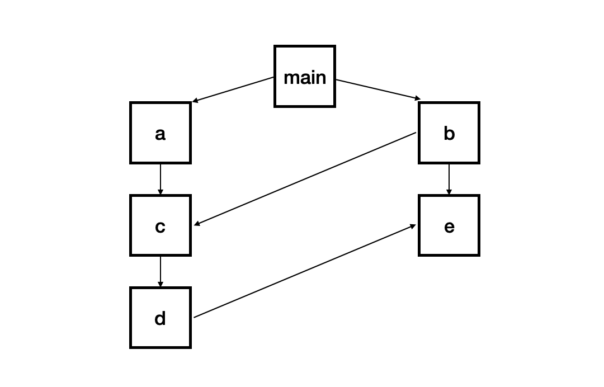

NodeJS
Atwood定律：任何能够用 JavaScript 实现的应用系统，最终都必将用 JavaScript 实现。


关于浏览器内核。IE 浏览器的 Trident 在转向 Edge 后使用 Blink；统称为 Chromium 的 Chrome 浏览器内核，以前是 Webkit，现在是 Blink；Firefox 的 Gecko；Safari 的 Webkit；Opera 浏览器最初是自己的 Presto，后来是 Webkit，现在是 Blink。
在浏览器内核的解析过程中，当 HTML 解析遇见 JavaScript 代码时，会停止解析 HTML，转而执行 JavaScript 代码。不同于 CSS 异步加载执行，阻塞停止是因为 JavaScript 代码可以操作 DOM，所以浏览器需要将 HTML 解析后的 DOM 和 JavaScript 操作后的 DOM 一起生成最终 DOM，而不是频繁的生成新 DOM Tree。

浏览器内核通常由两部分组成，以 Webkit 为例，WebCore 负责 HTML 解析、布局、渲染；JavaScriptCore 负责解析，执行 JS 代码。
类似于 JRE 为 JAVA 提供了一个运行时环境，NodeJS 就是为 JavaScript 提供了一个运行时环境。严格意义上 NodeJS 并不等于 JavaScript，JS 除了包含 ECMAScript 外，还会包含一些浏览器特性，比如 DOM 对象以及 BOM 对象（在服务端是没有的）。
NodeJS 有两个比较重要的特性：非阻塞 IO 模型与事件驱动。IO 即计算机的输入输出，常见有显示器于打印机这些设备，还有一些磁盘的读写与网络的传输，甚至数据库的操作。计算机程序是按照顺序逐条执行直到结束。阻塞 IO 就是进行 IO 操作时，进程处于一种休眠的状态，等待 IO 操作完成再进行下一次的操作。简单来说如果某条指令需要 IO 操作，程序会调用操作系统的底层命令进行 IO 操作，但是在 IO 操作期间，程序会等待底层的命令返回结果，在拿到返回结果后才能进行下一条指令，此时，就会认为 IO 就阻塞了进程，这种等待底层操作 IO 的现象称为阻塞式 IO。顾名思义，非阻塞 IO 就是在程序遇见 IO 操作时，主程序不必等待底层 IO 返回结果，直接执行下一步指令，IO 操作完毕再通知主进程即可。通知可以理解为在 IO 操作后，触发一个事件函数即可使主进程得到响应。因为 NodeJS 是 JavaScript 的运行时，所以也是事件驱动的天然优势。
REPL 是 Read-Eval-Print Loop 简称，即读取-求值-输出循环，可以简单理解为一个交互式编程环境。
$ node
Welcome to Node.js v14.17.1.
Type ".help" for more information.
$ process
process { version: 'v14.17.1', versions: { node: '14.17.1', v8: '8.4.371.23-...
node index.js zszszs age=22 // 给 node 传参使用 process 内置对象的 argv(argument vector) 接收
console.trace(); // 打印函数调用栈
IO 密集与 WEB 开发
IO 密集对应的是 CPU 密集。如果一个程序大部分时间是处理逻辑运算、文件的压缩与解压、数据加密解密，那么可以视为 CPU 密集；如果程序大部分时间是用来做数据存储以及网络读取的一些操作则视为 IO 密集。
当下计算机运行速度是非常快的，而 IO 操作的提速却并未那么明显。浏览器向服务器发送 HTTP 请求，服务器会返回大量的 JS、HTML、CSS 文件。当请求到达服务器，除了使用 CPU 进行计算 URL 路径的文件位置外，剩下的基本都是文件的读取操作以及数据库的操作（本质把数据存储物理硬盘或者内存中），由此可见 HTTP 请求大部分还是 IO 操作。与此同时在页面渲染时除了会使用 CPU 计算外，也会涉及读取模板文件根据数据生成 HTML。所以说 WEB 开发是典型的 IO 密集的场景。
WEB 除了 IO 密集的概念外还有高并发。高并发可以简单理解为在单位时间内的访问量特别大。通用的高并发解决方法有增加物理服务器数量（机器增加后，流量增加可以使用负载均衡的方式使得流量分流到不同的机器上处理，这样响应 WEB 请求的能力就增强）、运算密集可以选用对应的多核 CPU、IO 操作密集则需要选用 IO 操作更好的服务器。此外从语言上改进可以起到事半功倍的效果，NodeJS 在处理高并发方面具有自己独特的优势。
进程 (Process) 是计算机中的程序关于某数据集合上的一次运行活动，通俗来说就是正在内存中运行的程序，多进程是通过 CPU 调度算法在纳秒单位切换执行多个进程。线程是进程内一个相对独立的可调度的执行单元，简而言之，线程被包含在进程中。线程指的是进程中单一顺序的控制流，一个进程可以并发多个线程，每条线程并行执行不同的任务，这个也叫做多任务。
对于线程的生命周期来说，一个进程开启一个任务，就是打开一个线程（在 DOWNIE4 开始一个下载任务）。当打开多个线程，这些线程会进入就绪状态，等待 CPU 的调度。当 CPU 对一个线程进行调度，分配给这个线程运行的时间也是随机的。周而复始的调度、阻塞直到当前线程的指令运行结束后才会进入销毁状态。
NodeJS 仅是关于 JS 部分为单线程，IO 操作是由底层其他线程来完成的，主线程马上返回处理其他事务，直到底层在特定的时刻驱动事件的回调即可。
全局对象
在程序的任何位置可以直接访问的对象，即全局对象。但是存在部分特殊的全局变量，这些全局变量实际上是模块中的变量，只不过每个模块都有，看起来是全局变量，且在命令行交互中不可直接使用。
// 常见的全局变量
process // 提供Node进程相关信息
console // 控制台
// 定时器全局函数
setTimeout(() => {},time)
setInterval(() => {},time)
setImmediate(() => {})
process.nextTick(() => {})
// 全局对象
global // global. 按两下 Tab
// 特殊的全局变量
// 需要进入文件所在文件夹再 node index.js
__dirname // 打印当前文件夹所在目录绝对路径
__filename // 打印当前文件所在目录绝对路径
exports、module、require() // 模块化相关
模块化
- 模块的导入与导出
NodeJS 专用的 CommonJS 模块（CJS）不同于 ES6 模块 (ESM)。在 ES6 中 export 与 export default 均可用于导出模块，并在需要的文件或模块中通过 "import from 模块名" 的方式将其导入。在 ES6 中通过 export 方式导出，就要在导入时要加上 {}，而 export default 则不需要，直接导入即可，且默认输出的导入，不需要知道所要加载模块的变量名。因为在一个文件或模块中，export、import 可以有多个，而 export default 仅有一个。
// ES6 —— export
// a.js
export const str = "zairesinatra";
export function zs (sth) {
return sth;
}
// 对应的导入方式：
// b.js
import { str, zs } from 'a'; // 也可以分开写两次，导入的时候带花括号
// ES6 —— export default
// a.js
const str = "zairesinatra";
export default str;
// 对应的导入方式：
//b.js
import str from 'a'; //导入的时候没有花括号
// ES6 —— 自由命名
// a.js
let name = "xzy";
export default name // name不能加大括号
// 原本直接export name外部是无法识别的，加上default就可以了.但是一个文件内最多只能有一个export default。
// 其实此处相当于为name变量值"xzy"起了一个系统默认的变量名default，自然default只能有一个值，所以一个文件内不能有多个export default。
// b.js
// 本质上，a.js文件的export default输出一个叫做default的变量，然后系统允许你为它取任意名字。所以可以为import的模块起任何变量名，且不需要用大括号包含
import zs from "./a.js"
import zy from "./a.js"
console.log(zs,zy) // xzy,xzy
在 CommonJS 中，使用 require 引入后返回的只有 module.exports 这个对象。而在编写模块时用到的 exports 对象实际上只是对 module.exports 的引用。module.exports 初始值为一个空对象 {}。SOF 点此。
// 区分 exports 与 module.exports
// 如果覆盖 exports 的值,那么将丢失对 module.exports 的引用,而 module.exports 就是作为公共接口公开的内容
var module = new Module(...);
var exports = module.exports;
// CommonJS —— 导出单个模块
// formatTime
function formatTime (){
// 需要的格式 yyyy-MM-dd hh:mm:ss
var date = new Date(); // 或者传入一个时间戳
Y = date.getFullYear() + '-';
M = (date.getMonth()+1 < 10 ? '0'+(date.getMonth()+1) : date.getMonth()+1) + '-';
D = date.getDate() + ' ';
h = date.getHours() + ':';
m = date.getMinutes() + ':';
s = date.getSeconds();
console.log(Y+M+D+h+m+s); // 当前时间格式化输出
}
module.exports = formatTime
// requireFT
var requireFT = require('./formatTime') // 当然 .js 可以省略
requireFT() // 2019-08-29 20:33:48
// CommonJS —— 导出多个模块
// func.js
var func1 = () =>{console.log('I am func1')}
var func2 = function(){console.log('I am func2')}
module.exports.func1 = func1;
module.exports.func2 = func2;
// 可简写
module.exports = { // 键值同名可以只写一个
func1: func1, // func1,
func2: func2 // func2
}
// requireFunc.js
var requireObj = require('./formatTime')
requireObj.func1(); // I am func1
requireObj.func2(); // I am func2
// mod1.js
let name = "zs"; // 字符串是值引用,已经指定了地址
setTimeout(() => {
name = "zszszs"
}, 1000)
module.exports = {
name: name
}
// exec1.js
const mod1 = require('./mod1')
setTimeout(() => {
console.log(mod1.name); // zs
}, 2000)
// mod2.js
let info = { name: "zs"}; // 引用对象在堆内存开辟空间
setTimeout(() => {
info.name = "zszszs" // 改变了指针
}, 1000)
module.exports = {
info // info 赋值的是内存地址
}
// exec2.js
const mod2 = require('./mod2')
setTimeout(() => {
console.log(mod2.info.name); // zszszs
}, 2000)
- require 细节
require 是一个函数，帮助引入文件模块中的导出对象，其过程是同步的。
require 查找规则依据是否为核心模块，直接返回 fs、path、http... 并停止查找或分类讨论。
如果以 ./ 或 ../ 或 / 开头的本地文件进行查找。有后缀名时，按照后缀名格式进行查找，没有则按文件、js 文件、json 文件、node 文件的顺序查找。若没有找到，则按目录名进行查找。
直接以名称引入，且非核心模块，则按层级顺序依次从最近的 node_modules 文件夹查找到根目录的 node_modules 文件夹。
- 全局模块与核心模块
在项目中可以随时访问，不需要引入的模块称为全局模块（包括全局对象与全局变量）。不需要单独下载，可以直接引入 (require的参数就是路径) 的模块称为核心模块 (path、fs、http)。
- 模块的加载过程
模块被第一次引入，模块的 JS 代码被运行一次；若模块被多次引入，也只会加载一次，因为每个模块对象 module 都有一个属性 loaded，为 false 时表示没有加载，true 则已加载完成。
如出现下图的循环引入，则加载顺序为 main、a、c、d、e、b。这是一种图结构；图结构在遍历时有深度优先搜索和广度优先搜索，然而 Node 采用深度优先搜索。

- AMD 和 CMD
AMD 是 Asynchronous Module Definition 移步模块化的缩写，采用异步加载模块。常用的库是 require.js 和 curl.js。
<script src="./lib/require.js" data-main="./index.js"></script>
// index.js
(function(){
require.config({
baseUrl: '',
path: {
"bar": "./modules/bar", // 对应模块的映射关系
"foo": "./modules/foo"
}
})
require(['foo'], function(foo){})
})()
// bar.js
define(function() {
const name = "zszs";
const age = 21;
const sayHello = function(){
console.log("hi" + name);
}
return {
name: name,
age: age,
sayHello: sayHello
}
})
// foo.js
define(['bar'], function(bar){
console.log(bar.name);
console.log(bar.age);
bar.sayHello("zy");
})
CMD 是 Common Module Definition 通用模块定义的缩写，也采用异步加载模块。实现方案是 SeaJS。
<script src="./lib.sea.js"></script>
<script>
seajs.use('./index.js')
</script>
// index.js
define(function(require, exports, module){
const foo = require('./modules/foo');
console.log(foo.name);
console.log(foo.age)
console.log(foo.sayHello('zy'))
})
// foo.js
define(function(require, exports, module){
const name = "zs";
const age = 21;
const sayHello = function(name){
console.log("hi" + name);
}
module.exports = {
name,
age,
sayHello
}
})
Buffer 缓冲区
核心库 Buffer 类似一个整数数组，其元素为十六进制的两位数。Buffer 创建内存中空间的每一个元素范围是 00-ff => 0-255 => 00000000-11111111 => 8bit => 1byte，所以实际上一个元素就表示内存中的一个字节。此外 Buffer 中的内存不是通过 Javascript 分配，而是在底层通过 C++ 申请的，对应 V8 堆内存之外的一块原始内存。
服务器响应的可能是图片、音乐、视频之流的二进制文件，而 JavaScript 没有二进制数据类型，这就需要 Buffer 库为 NodeJS 提供存储原始数据的方法来处理二进制数据。此外计算机中的二进制都会以十六进制显示，所以尽管存储的是二进制，显示的却还是十六进制。
console.log(Buffer.from('Hello zs')) // <Buffer 48 65 6c 6c 6f 20 7a 73>
console.log(Buffer.from('Hello zs').length) // 占用内存大小;一个英文占1字节 - 8
console.log('Hello zs'.length) // 字符串长度 - 8
console.log(Buffer.from('Hello 紫').length) // 占用内存大小;一个汉字占3字节 - 9
console.log('Hello 紫'.length) // 字符串长度 - 7
// new Buffer()构造函数来创建对象实例,但是Buffer对内存的权限操作相比很大,可以直接捕获一些敏感信息, 所以在v6.0以后被替代
// Buffer.alloc(size[, fill[, encoding]]) 返回一个指定大小的Buffer实例,如果没有设置 fill,则默认填满 0.
// Buffer 大小一旦确定则不能修改,Buffer实际上是对底层内存的直接操作,在内存中分配出连续的长度为确定的空间.这一点与数组不同,内存空间不连续则性能较差
// 创建一个长度为 10、且用0 填充的Buffer
const buf1 = Buffer.alloc(10);
// 创建一个长度为 10、且用 0x1 填充的 Buffer
const buf2 = Buffer.alloc(10, 1);
// Buffer.allocUnsafe(size)返回一个指定大小的 Buffer 实例,此方法比调用既分配空间又清空数据的 Buffer.alloc() 更快。但是 Buffer 实例不会被初始化则可能包含敏感的旧数据,需要使用 fill() 或 write() 重写
// 创建一个长度为 10、且未初始化的 Buffer
const buf3 = Buffer.allocUnsafe(10);
// 适用在不确定的时间内从池中保留一小块内存的情况
Buffer.allocUnsafeSlow(size)
// Buffer.from(array) 返回一个被 array 的值初始化的新的 Buffer 实例,这里传入的 array 的元素只能是数字,不然就会自动被 0 覆盖
// 创建一个包含 [0x1, 0x2, 0x3] 的 Buffer
const buf4 = Buffer.from([1, 2, 3]);
// Buffer.from(arrayBuffer[, byteOffset[, length]]) 返回一个新建的与给定的 ArrayBuffer 共享同一内存的 Buffer
// Buffer.from(buffer) 复制传入的 Buffer 实例的数据,并返回一个新的 Buffer 实例
console.log(Buffer.from(Buffer.from('Hello zs')), Buffer.compare(Buffer.from('Hello zs'), Buffer.from(Buffer.from('Hello zs')))) // <Buffer 48 65 6c 6c 6f 20 7a 73> 0
// Buffer.from(string[, encoding]) 返回一个被 string 的值初始化的新的 Buffer 实例
// 创建一个包含 UTF-8 字节 [0x74, 0xc3, 0xa9, 0x73, 0x74] 的 Buffer
const buf5 = Buffer.from('tést');
// 创建一个包含 Latin-1 字节 [0x74, 0xe9, 0x73, 0x74] 的 Buffer
const buf6 = Buffer.from('tést', 'latin1');
结束
本博客所有文章除特别声明外，均采用 CC BY-SA 4.0 协议，转载请注明出处！